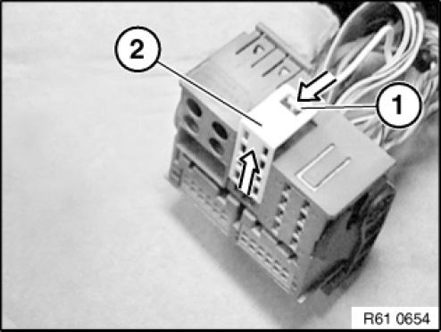
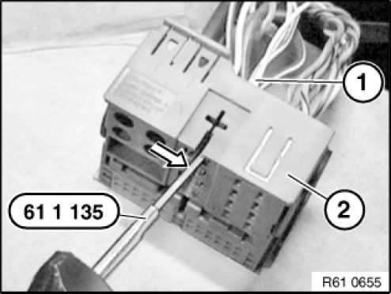
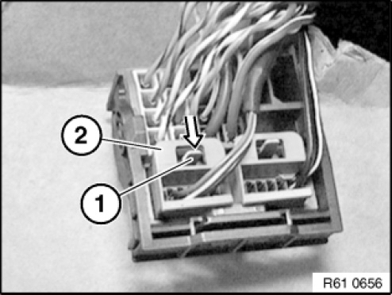
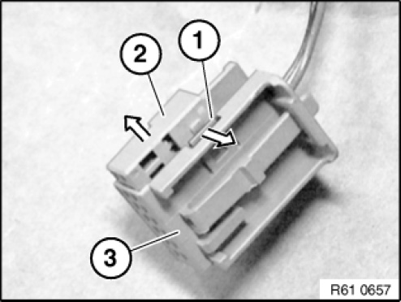
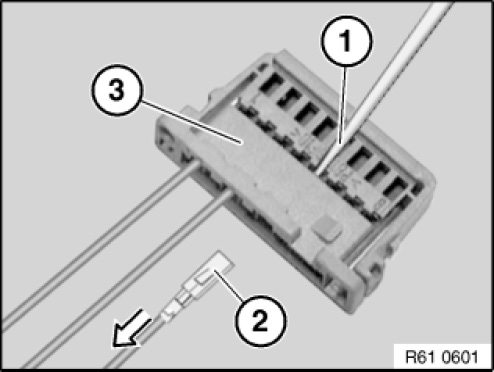
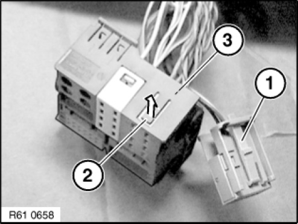
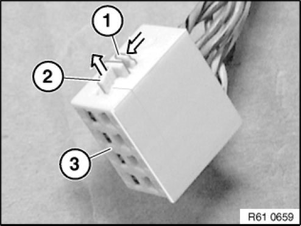
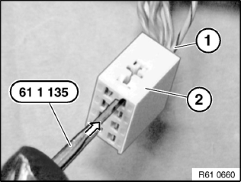

61 13 ... Socket Housing (Radio Type Plug), Hybrid System MQS/MPQ
61 13 ... Socket Housing (Radio Plug), Hybrid System MQS/MPQ

Manufactured by AMP:
The following contact types without strand sealing can be fitted in the plug housings:
- MQS (Micro Quadlock System)
- MPQ, width 2.8 mm (Micro Power Quadlock)
- MPQ, width 5.2 mm (Micro Power Quadlock)

Removing MPQ contacts from radio plug:
Press lock (1) in direction of arrow.
Detach secondary lock (2) from radio plug.

Feed special tool 61 1 135 past side of contact.
Press special tool 61 1 135 in direction of arrow.
Pull wire (1) with socket contact out of radio plug (2).

Removing MQS contacts from contact carrier:
Press lock (1) in direction of arrow and pull housing (2) out of radio plug.

Press lock (1) in direction of arrow. Pull contact carrier (2) out of housing (3).
NOTE: When the contact carrier is pulled out, the secondary locks of the socket contacts are raised.

Hold down retaining hook (1) of socket contact in opening of contact carrier with a small screwdriver.
Pull wire with socket contact in direction of arrow as far as secondary lock (2).
NOTE: The illustration shows an 8-pin female connector housing where contact removal is identical.

Depress retaining hook in secondary lock (1) once again. Remove wire with female contact (2) from contact carrier (3) completely.

Removing MPQ contacts from contact carrier:
Remove contact carrier (1) with MQS contacts from the radio plug.
Raise lock (2) on radio plug.
Remove contact carrier (3) from radio plug.

Press lock (1) in direction of arrow.
Pull secondary lock (2) in the direction of the arrow and out of contact carrier (3) completely.

Press special tool 61 1 135 against inside of contact in contact carrier (2).
Remove wire with female contact (1) from contact carrier (2).